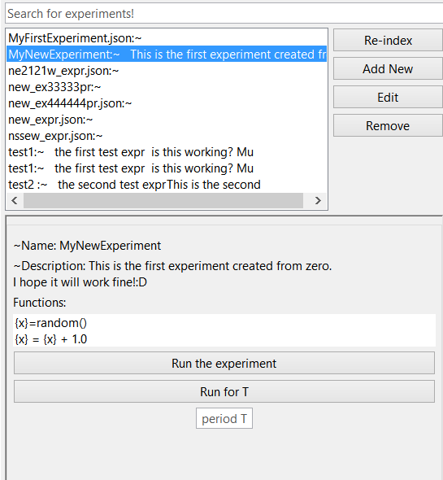

From the main window, hit the Re-Index button in the top left
corner. This will populate the experiment list with the experiments from the selected
folder.

Also, after double clicking on one of the experiments in the list,
some details about it will pop up and you will be able to run it